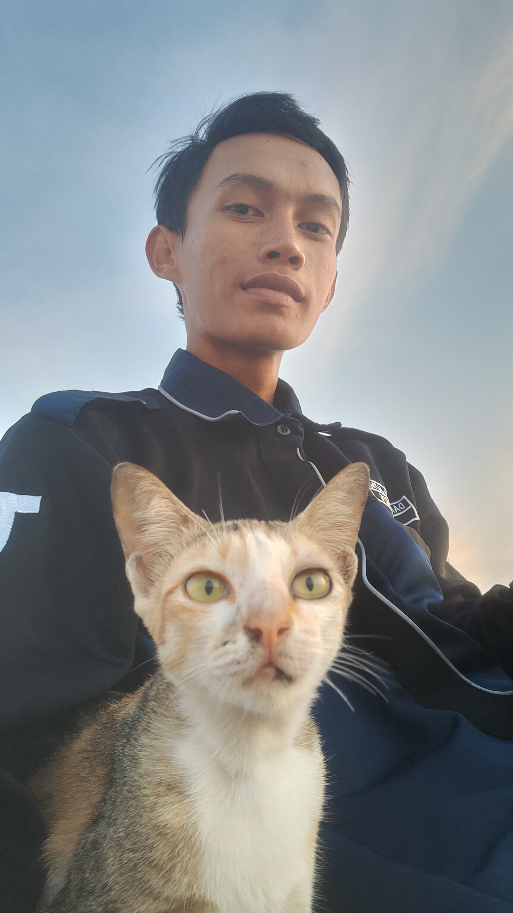

Danangin-Ionic
My Personal Info

Data Diri
Pendidikan
Hobi
Lainnya
Data Diri
- Nama: Danang Dwi Jatmiko
- Usia: 21
- Pekerjaan: Mahasiswa
- Jenis Kelamin: Laki-Laki
- Email: mistarlong@gmail.com
- No HP: +62 856-6894-7486
- Tempat Lahir: Desa Jelapat
- Tanggal Lahir: 24 Desember 2002
- Tempat Tinggal: Desa Karang
- Status: Belum Menikah
- Anak Ke: 2 Dari 2 bersaudara
- Nama Ayah: Sukoco
- Nama Ibu: Mariam
- Nama Kakak: Puspa Jatmika
Pendidikan
- TK TUNAS MEKAR (2009)
- SDN JELAPAT I (Kelas 1 Semester 1)
- SDN GAMBUT I (Kelas 1 Semester 2)
- SDN ANGSAU 5 (Kelas 2 - 6)
- SMPN 1 PELAIHARI (2015 - 2018)
- SMKN 2 PELAIHARI (2018 - 2020)
- BLK Banjarbaru (2021)
- POLITEKNIK Negeri Tanah Laut (2022 - Sekarang)
Hobi
- Main Game
- Mobile Legend
- Clash Of Clans
- Playstation
- Permainan Tradisional
- Nonton Film
- Anime
- Live Action
- Komedi
- Action
- Kartun
- Belajar
Lainnya
- Makanan Kesukaan: Ayam Masak Kecap Yang Sedikit Gosong
- Minuman Kesukaan: Cola Dingin
- Makanan Yang Tidak di Suka: Alpukat
- Pelajaran Kesukaan: Sesuatu yang berhubungan dengan IT atau Matematika
- Panutan: Jendral Soedirman
- Tempat Yang Disukai: Desa Kelahiran
- Organisasi:
- FSI Al Ikhwana
- Badan Eksekutif Mahasiswa
- Resimen Mahasiswa
- KoPi TALA